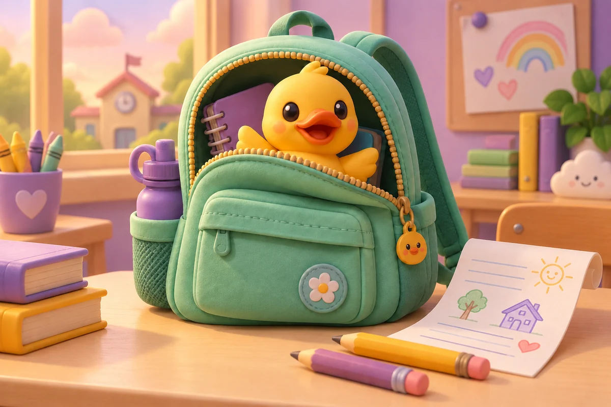
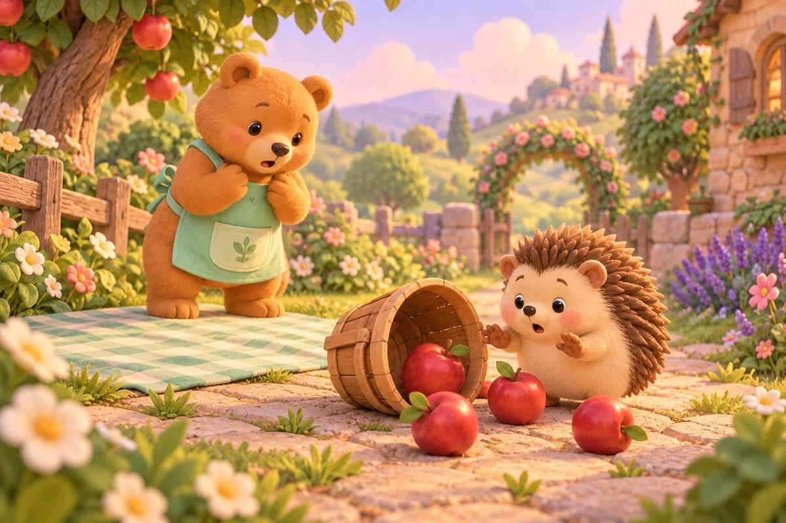

4 ILLUSTRATED PAGES
Fruit adventure
A tiny rat chef makes a sunny fruit salad.
Try the mockup →All pages3 ILLUSTRATED PAGES
Space mission
A friendly robot, a star map, and the way home.
Try the mockup →All pages
3 ILLUSTRATED PAGES
Funny day
A surprise guest with an appetite for homework.
Try the mockup →All pages
5 ILLUSTRATED PAGES
Little kindness
A yellow umbrella with room for a new friend.
Try the mockup →All pages